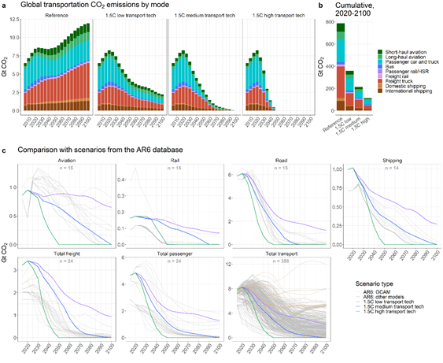

A new study proposes ways to cut global transportation emissions, a key area for mitigating climate change. The transportation sector is responsible for 20% of global carbon emissions, with aviation and maritime being especially challenging to mitigate due to limited clean technology options.

An international research team published a paper in Nature Communications, proposing scenarios for fully decarbonizing the global transportation sector. This study compared the carbon dioxide emissions from the global transportation sector in three decarbonization scenarios and a baseline scenario, measuring the transportation sector’s contribution to global reductions in each scenario. In particular, the paper emphasized scenarios for the maritime and aviation sectors, which account for a quarter of the total carbon emissions in the transportation sector but have slower technological development than the vehicle transportation sector.
Their most ambitious scenario could achieve a 34% reduction in total transportation emissions by 2100. This would require significant R&D in hydrogen and electric technologies for aviation and maritime sectors.
“The transport sector is a major emitter of greenhouse gases,” said the corresponding author Haewon McJeon, an associate professor at KAIST Graduate School of Green Growth and Sustainability. “This research shows the pathways for rapidly eliminating the emissions from the transport sector.”
Paper link: https://doi.org/10.1038/s41467-024-48424-9
논문 요약
기후 변화 완화를 위해 글로벌 교통 부문의 배출량을 줄이는 방안을 제안한 논문이 발표되었다. 교통 부문은 전 세계 탄소 배출량의 20%를 차지하며, 특히 항공 및 해운 부문은 청정 기술 옵션이 제한적이어서 완화하기 어려운 상황이다. 국제 연구팀은 Nature Communications에 전 세계 교통 부문의 완전 탈탄소화 시나리오를 제안한 논문을 발표하였다. 이 연구는 세 가지 탈탄소화 시나리오와 기준 시나리오에서 글로벌 교통 부문의 이산화탄소 배출량을 비교하고 각 시나리오에서 교통 부문의 글로벌 감축 기여도를 측정하였다. 특히, 전체 탄소 배출량의 25%를 차지하나 탈탄소 기술 발전이 느린 항공 및 해운 부문의 시나리오에 초점을 맞췄다.
가장 야심찬 시나리오에서는 2100년까지 교통 부문의 총 배출량을 34%까지 줄일 수 있으며, 이를 위해서는 항공 및 해운 부문에서 수소 및 전기 기술에 대한 상당한 연구개발이 필요하다.
“교통 부문은 온실가스의 주요 배출원이며, 이 연구는 교통 부문에서 배출량을 빠르게 제거할 수 있는 경로를 보여준다.” 라고 교신저자이자 KAIST 녹색성장지속가능대학원의 Haewon McJeon 부교수는 말하였다.